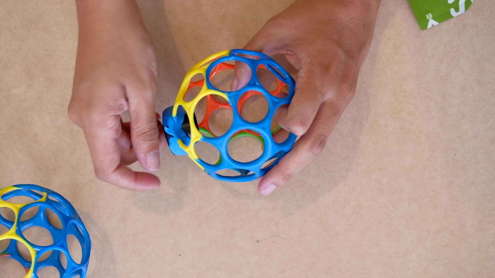
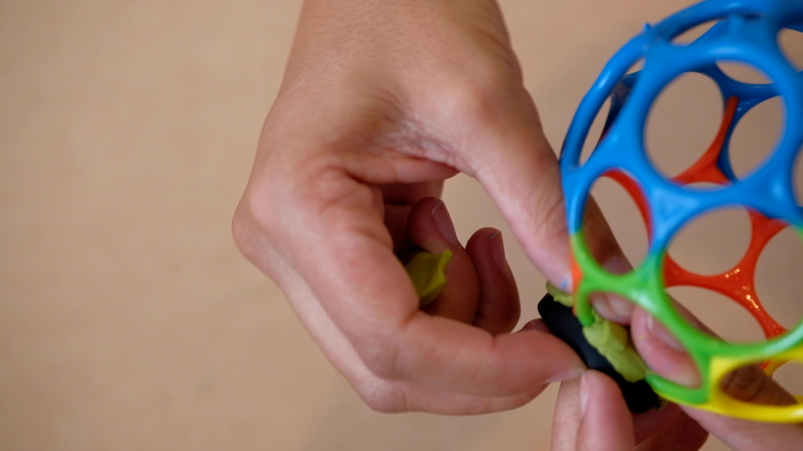
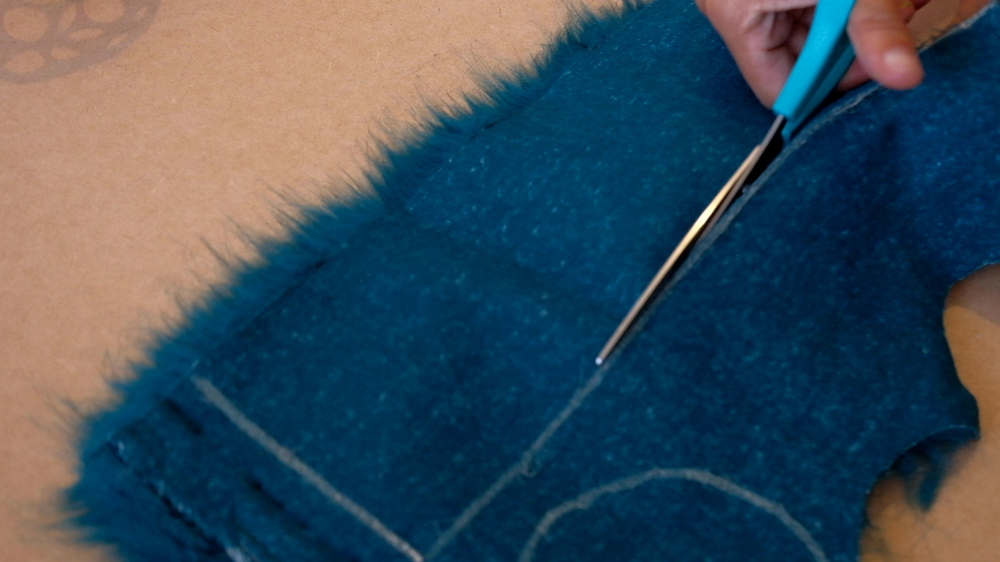
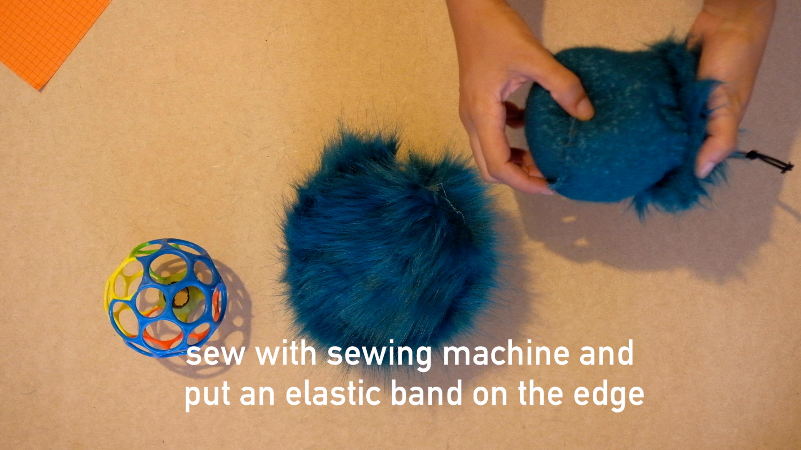
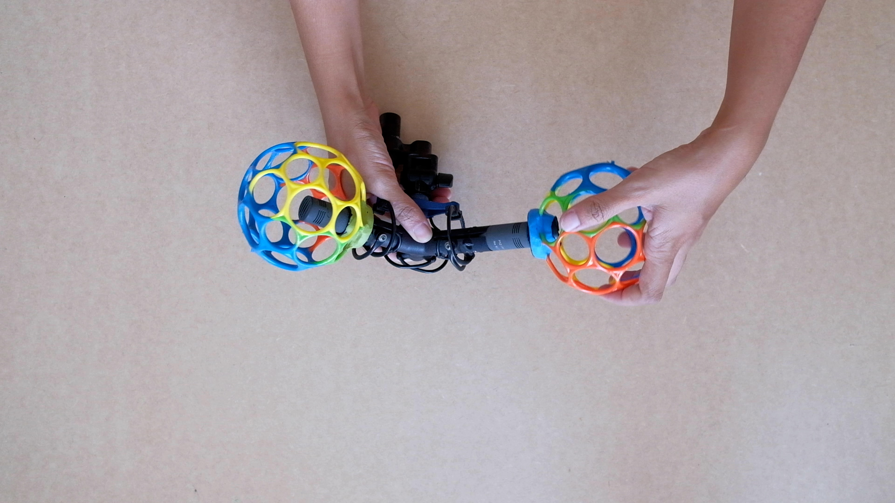

DIY windscreen with o-ball
A simple tutorial to do a windscreen for your microphone (⌀ 20mm), step by step.
do it yourself following each step below.

Materials:
1. Obal (⌀ 10cm) x2 ⋍ 6€ each
2. Synthetic Fur (⋍1m x 50cm)
3. Suspension Superlux HM30 ⋍ 3€
4. Sugru (moldable glue) x2
5. Elastic cord (⋍1m)
6. Plastics cord locks x 2
7. Sewing thread
8. Sheet of paper
Tools:
1. Cutter (Blade Knife)
2. Scissors
3. Ruler
4. Permanent ink pen
5. Poska paint marker
6. Sewing machine
step 1: suspension


-
Take out the inner part of the Superlux suspension HM30
-
Cut it in the middle with the cutter (Blade Knife)
-
Put each part of the suspension in one of the hole of the Oball
step 2: sugru (or silicone with cornstarch)




-
Open one of the Sugru package
-
Note about Sugru: You could do your own moldable glue mixing 50% silicone with 50% cornstarch (maizena) to get a similar result as the sugru.
- Apply the Sugru (or the silicone mix) between the suspension and the oball, in order to glue both elements. One pack per ball is enough.
- Let it dry for 24hours before using
step 3: synthetic fur




-
Mark with a chalk or liquid chalk paint marker a circle of 10,5cm and a rectangle of 34cm x 10,5cm
-
Cut the figures with scissors
step 4: sewing




-
Saw the pieces of synthetic fur with a sewing machine
-
Put an elastic cord on the edge and a plastic cord lock at the end of it
step 5: mounting on microphone




-
After 24h mount the windscreen on your microphone
-
Put the synthetic fur on it
-
Go to record in the wind!
-
Enjoy!!
This tutorial is not an invention, but rather a combination of different ideas and DIY experiments on the internet, specially Jérôme Bailly for his nice initiative.
Other links:
Missing a link to a nice DIY tutorial or another nice way of buying a windscreen for microphone?
Do you want to share with us your own picture or tips to do it?
Contact us!
https://saralana.xyz/about & https://felixblume.com/contact


Photos
oBall by Jérôme Bailly ||| Oball + synthetic fur in the field by Félix Blume (2 Schoeps CCM4 on a Cinela ORTF suspension) ||| oBall + ORTF Superlux by Sara Lana ||| o-ball + Windscreens by Mélia Rogier
Thanks to:
Many thanks to Marie-Christine Cabanas and Elisa Lana for the sewing part!